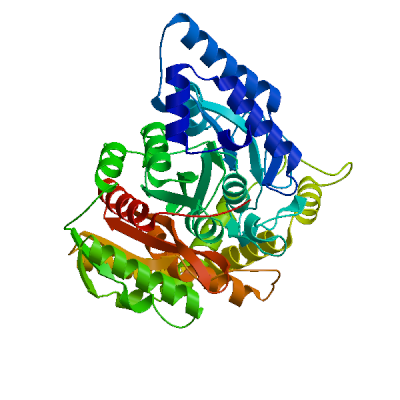
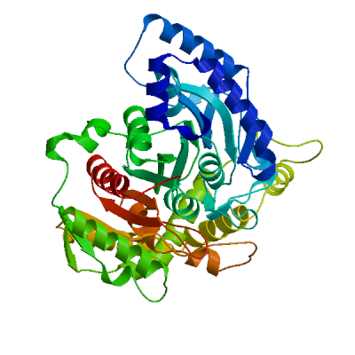
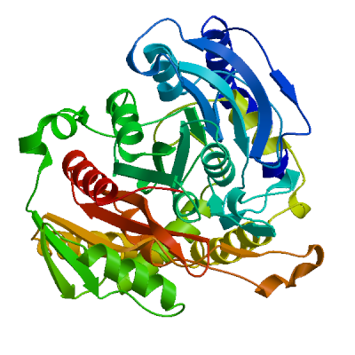

Model Building Report
This document lists the results for the homology modelling project "GATA_MYCTU P9WQA1 Glutamyl-tRNA(Gln) amidotransferase subunit A" submitted to SWISS-MODEL workspace on Jan. 8, 2025, 3:23 p.m..The submitted primary amino acid sequence is given in Table T1.
If you use any results in your research, please cite the relevant publications:
- Waterhouse A, Bertoni M, Bienert S, Studer G, Tauriello G, Gumienny R, Heer FT, de Beer TAP, Rempfer C, Bordoli L, Lepore R, Schwede TSWISS-MODEL: homology modelling of protein structures and complexes.Nucleic Acids Res 46, W296-W303. (2018)
 29788355
29788355 10.1093/nar/gky427
10.1093/nar/gky427 - Bienert S, Waterhouse A, de Beer TAP, Tauriello G, Studer G, Bordoli L, Schwede TThe SWISS-MODEL Repository - new features and functionality.Nucleic Acids Res 45, D313-D319. (2017)2789967210.1093/nar/gkw1132
- Studer G, Tauriello G, Bienert S, Biasini M, Johner N, Schwede TProMod3 - A versatile homology modelling toolbox.PLOS Comp Biol 17(1), e1008667. (2021)3350798010.1371/journal.pcbi.1008667
- Studer G, Rempfer C, Waterhouse AM, Gumienny R, Haas J, Schwede TQMEANDisCo - distance constraints applied on model quality estimation.Bioinformatics 36, 1765-1771. (2020)3169731210.1093/bioinformatics/btz828
- Bertoni M, Kiefer F, Biasini M, Bordoli L, Schwede TModeling protein quaternary structure of homo- and hetero-oligomers beyond binary interactions by homology.Scientific Reports 7. (2017)2887468910.1038/s41598-017-09654-8
Results
The SWISS-MODEL template library (SMTL version 2025-01-08, PDB release 2025-01-03) was searched with BLAST (Camacho et al.) and HHblits (Steinegger et al.) for evolutionary related structures matching the target sequence in Table T1. For details on the template search, see Materials and Methods. Overall 125 templates were found (Table T2).
Models
The following models were built (see Materials and Methods "Model Building"):
Model #01 |
File | Built with | Oligo-State | Ligands | GMQE |
|---|---|---|---|---|---|
|  | PDB | ProMod3 3.4.1 | monomer |
None
|
0.97 |
|
|
| Template | Seq Identity | Oligo-state | QSQE | Found by | Method | Resolution | Seq Similarity | Range | Coverage | Description |
|---|---|---|---|---|---|---|---|---|---|---|
| B2HIF7.1.A | 91.48 | monomer | - | AFDB search | AlphaFold v2 | - | 0.58 | 1 - 494 | 1.00 | Glutamyl-tRNA(Gln) amidotransferase subunit A |
The template contained no ligands.
Target MTDIIRSDAATLAAKIAIKEVSSAEITRACLDQIEATDETYHAFLHVAADEALAAAAAIDKQVAAGEPLPSALAGVPLAL
B2HIF7.1.AMTDLIRSDAATLAAKIAAKEVSATELTQACLDQIEATDDRYHAFLHIGAHEALSAAAAVDTALAAGERLPSALAGVPLAL
Target KDVFTTSDMPTTCGSKILEGWRSPYDATLTARLRAAGIPILGKTNMDEFAMGSSTENSAYGPTRNPWNLDRVPGGSGGGS
B2HIF7.1.AKDVFTTVDMPTTCGSKILEGWRSPYDATLTLRLRAAGIPILGKTNMDEFAMGSSTENSAYGPTRNPWNLDRVPGGSGGGS
Target AAALAAFQAPLAIGSDTGGSIRQPAALTATVGVKPTYGTVSRYGLVACASSLDQGGPCARTVLDTALLHQVIAGHDPRDS
B2HIF7.1.AAAALAAYQAPLAIGSDTGGSIRQPAALTATVGVKPTYGTVSRYGLVACASSLDQGGPCARTVLDTAMLHQVIAGHDAKDS
Target TSVDAEVPDVVGAARAGAVGDLRGVRVGVVRQLHGGEGYQPGVLASFEAAVEQLTALGAEVSEVDCPHFDHALAAYYLIL
B2HIF7.1.ATSLETEIPDVVGAAKAGASGDLRGVRIGVVKQLR-GDGYQPGVLASFEAAVAQLTALGAEVSEVDCPHFDHALAAYYLIL
Target PSEVSSNLARFDAMRYGLRVGDDGTRSAEEVMAMTRAAGFGPEVKRRIMIGTYALSAGYYDAYYNQAQKVRTLIARDLDA
B2HIF7.1.APSEVSSNLARFDAMRYGLRIGDDGTHSAEEVMAMTRAAGFGPEVKRRIMIGAYALSAGYYDAYYNQAQKVRTLIARDLDE
Target AYRSVDVLVSPTTPTTAFRLGEKVDDPLAMYLFDLCTLPLNLAGHCGMSVPSGLSPDDGLPVGLQIMAPALADDRLYRVG
B2HIF7.1.AAYQSVDVLVSPATPTTAFPLGEKVDDPLAMYLFDLCTLPLNLAGHCGMSVPSGLSPDDGLPVGLQIMAPALADDRLYRVG
Target AAYEAARGPLLSAI
B2HIF7.1.AAAYEAARGPLPSAI
Model #02 |
File | Built with | Oligo-State | Ligands | GMQE | QMEANDisCo Global |
|---|---|---|---|---|---|---|
|  | PDB | ProMod3 3.4.1 | monomer |
None
|
0.81 | 0.79 ± 0.05 |
|
|
| Template | Seq Identity | Oligo-state | QSQE | Found by | Method | Resolution | Seq Similarity | Range | Coverage | Description |
|---|---|---|---|---|---|---|---|---|---|---|
| 4wj3.1.A | 51.57 | monomer | 0.00 | HHblits | X-ray | 3.71Å | 0.44 | 4 - 491 | 0.97 | Glutamyl-tRNA(Gln) amidotransferase subunit A |
The template contained no ligands.
Target MTDIIRSDAATLAAKIAIKEVSSAEITRACLDQIEATDETYHAFLHVAADEALAAAAAIDKQVAAGEPLPSALAGVPLAL
4wj3.1.A ---LHQLTLAEIARALADKQFSAEELTRTLLGRIRQLDPQLNSFISITDDLAIAQAKAADERRANGE--NGALLGAPIAH
Target KDVFTTSDMPTTCGSKILEGWRSPYDATLTARLRAAGIPILGKTNMDEFAMGSSTENSAYGPTRNPWNLDRVPGGSGGGS
4wj3.1.A KDLFCTQGVRTSCGSKMLDNFVSPYDATVVEKLTAAGAVTLGKLNMDEFAMGSSNQSSHYGAVKNPWSLDRVPGGSSGGS
Target AAALAAFQAPLAIGSDTGGSIRQPAALTATVGVKPTYGTVSRYGLVACASSLDQGGPCARTVLDTALLHQVIAGHDPRDS
4wj3.1.A AAAVAARLLPAATGTDTGGSIRQPAALTNLTGIKPTYGRVSRWGMIAYASSLDQGGPLARTAEDCALMLGVMAGFDPKDS
Target TSVDAEVPDVVGAARAGAVGDLRGVRVGVVRQLHGGEGYQPGVLASFEAAVEQLTALGAEVSEVDCPHFDHALAAYYLIL
4wj3.1.A TSVEQPVDDYLAA----LQKPLSGLRIGLPREYFG-AGLDSRIADAVLAVVEELKTLGATVKDISLPNMQHAIPAYYVIA
Target PSEVSSNLARFDAMRYGLRVGDDGTRSAEEVMAMTRAAGFGPEVKRRIMIGTYALSAGYYDAYYNQAQKVRTLIARDLDA
4wj3.1.A PAEASSNLSRFDGVRYGYRC--DAPQNLEDLYKRSRAEGFGSEVKNRIMVGTYALSAGYYDAYYLQAQKIRRLIKNDFVS
Target AYRSVDVLVSPTTPTTAFRLGEKVDDPLAMYLFDLCTLPLNLAGHCGMSVPSGLSPDDGLPVGLQIMAPALADDRLYRVG
4wj3.1.A AFAEVDVILGPTTPNPAWKIGEKNDDPVSQYLEDIYTITANLAGLPGLSMPAGFV--DGLPVGVQLLAPYFQEGRLLNVA
Target AAYEAARGPLLSAI
4wj3.1.A HQYQQVSDWHT---
Model #03 |
File | Built with | Oligo-State | Ligands | GMQE | QMEANDisCo Global |
|---|---|---|---|---|---|---|
|  | PDB | ProMod3 3.4.1 | monomer |
None
|
0.67 | 0.67 ± 0.05 |
|
|
| Template | Seq Identity | Oligo-state | QSQE | Found by | Method | Resolution | Seq Similarity | Range | Coverage | Description |
|---|---|---|---|---|---|---|---|---|---|---|
| 3a1k.1.A | 31.86 | monomer | 0.00 | HHblits | X-ray | 2.17Å | 0.34 | 7 - 491 | 0.96 | Amidase |
The template contained no ligands.
Target MTDIIRSDAATLAAKIAIKEVSSAEITRACLDQIEATDETYHAFLHVAADEALAAAAAIDKQVAAGEPLPSALAGVPLAL
3a1k.1.A ------KTARLEWPALIDGALGSYDVVDQLYADEATPPTTSREHAVPSASENP-LSAWYVTTSIPPT-SDGVLTGRRVAI
Target KDVFTTSDMPTTCGSKILEGWRSPYDATLTARLRAAGIPILGKTNMDEFAMGSSTENSAYGPTRNPWNLDRVPGGSGGGS
3a1k.1.A KDNVTVAGVPMMNGSRTVEGFTPSRDATVVTRLLAAGATVAGKAVCEDLCFSGSSFTPASGPVRNPWDRQREAGGSSGGS
Target AAALAAFQAPLAIGSDTGGSIRQPAALTATVGVKPTYGTVSRYGLVACASSLDQGGPCARTVLDTALLHQVIAGHDPRDS
3a1k.1.A AALVANGDVDFAIGGDQGGSIRIPAAFCGVVGHKPTFGLVPYTGAFPIERTIDHLGPITRTVHDAALMLSVIAGRDGNDP
Target TSVDAE-VPDVVGAARAGAVGDLRGVRVGVVRQLHGGEGYQPGVLASFEAAVEQLTALGAEVSEVDCPHFDHALAAYYLI
3a1k.1.A RQADSVEAGDYLS----TLDSDVDGLRIGIVREGFGHAVSQPEVDDAVRAAAHSLTEIGCTVEEVNIPWHLHAFHIWNVI
Target LPSEVSSNLARFDAMRYGLRVGDD-GTRSAEEVMAM--TRAAGFGPEVKRRIMIGTYALSAGYYDAYYNQAQKVRTLIAR
3a1k.1.A ATDGGAYQMLDGN--GYGMNAEGLYDPELMAHFASRRIQHADALSETVKLVALTGHHG-ITTLGGASYGKARNLVPLARA
Target DLDAAYRSVDVLVSPTTPTTAFRLGEKVDDPL----AMYLFDLCTLPLNLAGHCGMSVPSGLSPDDGLPVGLQIMAPALA
3a1k.1.A AYDTALRQFDVLVMPTLPYVASELPAKDVDRATFITKALGMIANTAPFDVTGHPSLSVPAGLV--NGLPVGMMITGRHFD
Target DDRLYRVGAAYEAARGPLLSAI
3a1k.1.A DATVLRVGRAFEKLRGAFP---
Materials and Methods
Template Search
Template search with BLAST and HHblits has been performed against the SWISS-MODEL template library (SMTL, last update: 2025-01-08, last included PDB release: 2025-01-03).
The target sequence was searched with BLAST against the primary amino acid sequence contained in the SMTL. A total of 55 templates were found.
An initial HHblits profile has been built using the procedure outlined in (Steinegger et al.), followed by 1 iteration of HHblits against Uniclust30 (Mirdita, von den Driesch et al.). The obtained profile has then be searched against all profiles of the SMTL. A total of 69 templates were found.
Template Selection
For each identified template, the template's quality has been predicted from features of the target-template alignment. The templates with the highest quality have then been selected for model building.
Model Building
Models are built based on the target-template alignment using ProMod3 (Studer et al.). Coordinates which are conserved between the target and the template are copied from the template to the model. Insertions and deletions are remodelled using a fragment library. Side chains are then rebuilt. Finally, the geometry of the resulting model is regularized by using a force field.
Model Quality Estimation
The global and per-residue model quality has been assessed using the QMEAN scoring function (Studer et al.).
Ligand Modelling
Ligands present in the template structure are transferred by homology to the model when the following criteria are met: (a) The ligands are annotated as biologically relevant in the template library, (b) the ligand is in contact with the model, (c) the ligand is not clashing with the protein, (d) the residues in contact with the ligand are conserved between the target and the template. If any of these four criteria is not satisfied, a certain ligand will not be included in the model. The model summary includes information on why and which ligand has not been included.
Oligomeric State Conservation
The quaternary structure annotation of the template is used to model the target sequence in its oligomeric form. The method (Bertoni et al.) is based on a supervised machine learning algorithm, Support Vector Machines (SVM), which combines interface conservation, structural clustering, and other template features to provide a quaternary structure quality estimate (QSQE). The QSQE score is a number between 0 and 1, reflecting the expected accuracy of the interchain contacts for a model built based a given alignment and template. Higher numbers indicate higher reliability. This complements the GMQE score which estimates the accuracy of the tertiary structure of the resulting model.
References
- Camacho C, Coulouris G, Avagyan V, Ma N, Papadopoulos J, Bealer K, Madden TLBLAST+: architecture and applications.BMC Bioinformatics, 10, 421-430. (2009)2000350010.1186/1471-2105-10-421
- Steinegger M, Meier M, Mirdita M, Vöhringer H, Haunsberger SJ, Söding JHH-suite3 for fast remote homology detection and deep protein annotation.BMC Bioinformatics 20, 473. (2019)3152111010.1186/s12859-019-3019-7
- Mirdita M, von den Driesch L, Galiez C, Martin MJ, Söding J, Steinegger MUniclust databases of clustered and deeply annotated protein sequences and alignments.Nucleic Acids Res, 45, D170–D176. (2016)2789957410.1093/nar/gkw1081
Table T1:
Primary amino acid sequence for which templates were searched and models were built.
WRSPYDATLTARLRAAGIPILGKTNMDEFAMGSSTENSAYGPTRNPWNLDRVPGGSGGGSAAALAAFQAPLAIGSDTGGSIRQPAALTATVGVKPTYGTV
SRYGLVACASSLDQGGPCARTVLDTALLHQVIAGHDPRDSTSVDAEVPDVVGAARAGAVGDLRGVRVGVVRQLHGGEGYQPGVLASFEAAVEQLTALGAE
VSEVDCPHFDHALAAYYLILPSEVSSNLARFDAMRYGLRVGDDGTRSAEEVMAMTRAAGFGPEVKRRIMIGTYALSAGYYDAYYNQAQKVRTLIARDLDA
AYRSVDVLVSPTTPTTAFRLGEKVDDPLAMYLFDLCTLPLNLAGHCGMSVPSGLSPDDGLPVGLQIMAPALADDRLYRVGAAYEAARGPLLSAI
Table T2:
| Template | Seq Identity | Oligo-state | QSQE | Found by | Method | Resolution | Seq Similarity | Coverage | Description |
|---|---|---|---|---|---|---|---|---|---|
| B2HIF7.1.A | 91.48 | monomer | - | AFDB search | AlphaFold v2 | NA | 0.58 | 1.00 | Glutamyl-tRNA(Gln) amidotransferase subunit A |
| 4wj3.1.A | 51.57 | monomer | - | HHblits | X-ray | 3.71Å | 0.44 | 0.97 | Glutamyl-tRNA(Gln) amidotransferase subunit A |
| 4wj3.2.D | 51.57 | monomer | - | HHblits | X-ray | 3.71Å | 0.44 | 0.97 | Glutamyl-tRNA(Gln) amidotransferase subunit A |
| 4wj3.1.D | 51.57 | monomer | - | HHblits | X-ray | 3.71Å | 0.44 | 0.97 | Glutamyl-tRNA(Gln) amidotransferase subunit A |
| 2g5i.1.A | 46.76 | monomer | - | HHblits | X-ray | 3.35Å | 0.42 | 0.97 | Glutamyl-tRNA(Gln) amidotransferase subunit A |
| 4wj3.1.A | 52.37 | monomer | - | BLAST | X-ray | 3.71Å | 0.44 | 0.94 | Glutamyl-tRNA(Gln) amidotransferase subunit A |
| 3h0r.5.A | 46.91 | monomer | - | HHblits | X-ray | 3.00Å | 0.42 | 0.95 | Glutamyl-tRNA(Gln) amidotransferase subunit A |
| 4wj3.1.D | 52.37 | monomer | - | BLAST | X-ray | 3.71Å | 0.44 | 0.94 | Glutamyl-tRNA(Gln) amidotransferase subunit A |
| 4wj3.2.D | 52.37 | monomer | - | BLAST | X-ray | 3.71Å | 0.44 | 0.94 | Glutamyl-tRNA(Gln) amidotransferase subunit A |
| 3kfu.1.E | 49.78 | monomer | - | HHblits | X-ray | 3.00Å | 0.42 | 0.93 | Glutamyl-tRNA(Gln) amidotransferase subunit A |
| 2g5i.1.A | 47.63 | monomer | - | BLAST | X-ray | 3.35Å | 0.42 | 0.94 | Glutamyl-tRNA(Gln) amidotransferase subunit A |
| 3kfu.1.E | 49.67 | monomer | - | BLAST | X-ray | 3.00Å | 0.42 | 0.92 | Glutamyl-tRNA(Gln) amidotransferase subunit A |
| 2gi3.1.A | 45.12 | homo-dimer | 0.48 | HHblits | X-ray | 1.80Å | 0.42 | 0.93 | Glutamyl-tRNA(Gln) amidotransferase subunit A |
| 3al0.1.A | 45.12 | monomer | - | HHblits | X-ray | 3.37Å | 0.42 | 0.93 | Glutamyl-tRNA(Gln) amidotransferase subunit A |
| 3a1k.1.A | 31.86 | monomer | - | HHblits | X-ray | 2.17Å | 0.34 | 0.96 | Amidase |
| 3a1i.1.A | 31.58 | homo-dimer | 0.41 | HHblits | X-ray | 2.32Å | 0.34 | 0.96 | Amidase |
| 3h0r.5.A | 51.86 | monomer | - | BLAST | X-ray | 3.00Å | 0.44 | 0.82 | Glutamyl-tRNA(Gln) amidotransferase subunit A |
| 6c6g.1.A | 34.52 | homo-dimer | 0.40 | HHblits | X-ray | 2.10Å | 0.35 | 0.91 | Biuret hydrolase |
| 1m22.2.A | 34.26 | monomer | - | HHblits | X-ray | 1.40Å | 0.35 | 0.95 | peptide amidase |
| 5ac3.1.A | 34.55 | monomer | - | HHblits | X-ray | 1.80Å | 0.35 | 0.94 | PEPTIDE AMIDASE |
| 4n0h.1.A | 30.70 | monomer | - | HHblits | X-ray | 1.95Å | 0.36 | 0.90 | Glutamyl-tRNA(Gln) amidotransferase subunit A, mitochondrial |
| 2dc0.1.A | 30.77 | homo-dimer | 0.34 | HHblits | X-ray | 2.00Å | 0.34 | 0.87 | probable amidase |
| 5h6s.1.A | 26.86 | homo-dimer | 0.17 | HHblits | X-ray | 1.80Å | 0.32 | 0.90 | Amidase |
| 3al0.1.A | 50.50 | monomer | - | BLAST | X-ray | 3.37Å | 0.44 | 0.81 | Glutamyl-tRNA(Gln) amidotransferase subunit A |
| 2gi3.1.A | 50.50 | homo-dimer | 0.43 | BLAST | X-ray | 1.80Å | 0.44 | 0.81 | Glutamyl-tRNA(Gln) amidotransferase subunit A |
| 8xac.1.A | 27.15 | homo-tetramer | 0.15 | HHblits | X-ray | 3.02Å | 0.32 | 0.89 | Amidase family protein |
| 8wdw.1.A | 29.48 | monomer | - | HHblits | X-ray | 2.16Å | 0.33 | 0.86 | UMG-SP2 |
| 3qk5.1.B | 21.86 | homo-dimer | 0.24 | HHblits | X-ray | 2.20Å | 0.30 | 0.94 | Fatty-acid amide hydrolase 1 |
| 3ppm.1.B | 21.91 | homo-dimer | 0.28 | HHblits | X-ray | 1.78Å | 0.30 | 0.93 | Fatty-acid amide hydrolase 1 |
| 1obl.1.A | 28.29 | homo-dimer | 0.35 | HHblits | X-ray | 2.00Å | 0.33 | 0.83 | MALONAMIDASE E2 |
| 1obk.1.A | 28.54 | homo-dimer | 0.37 | HHblits | X-ray | 2.20Å | 0.33 | 0.83 | MALONAMIDASE E2 |
| 1o9q.1.A | 28.05 | homo-dimer | 0.35 | HHblits | X-ray | 1.80Å | 0.33 | 0.83 | MALONAMIDASE E2 |
| 1obj.1.A | 28.29 | homo-dimer | 0.33 | HHblits | X-ray | 1.90Å | 0.33 | 0.83 | MALONAMIDASE E2 |
| 1o9o.1.A | 28.05 | homo-dimer | 0.36 | HHblits | X-ray | 2.30Å | 0.33 | 0.83 | MALONAMIDASE E2 |
| 6mrg.1.A | 21.86 | monomer | - | HHblits | X-ray | 2.77Å | 0.30 | 0.94 | Fatty-acid amide hydrolase 1 |
| 8xac.1.D | 27.15 | homo-tetramer | 0.15 | HHblits | X-ray | 3.02Å | 0.32 | 0.89 | Amidase family protein |
| 4do3.1.A | 21.96 | homo-dimer | 0.29 | HHblits | X-ray | 2.25Å | 0.30 | 0.93 | Fatty-acid amide hydrolase 1 |
| 2vya.1.A | 21.91 | homo-dimer | 0.20 | HHblits | X-ray | 2.75Å | 0.30 | 0.93 | FATTY-ACID AMIDE HYDROLASE 1 |
| 1o9n.1.A | 28.05 | homo-dimer | 0.35 | HHblits | X-ray | 2.00Å | 0.33 | 0.83 | MALONAMIDASE E2 |
| 1mt5.1.A | 21.83 | homo-dimer | 0.27 | HHblits | X-ray | 2.80Å | 0.30 | 0.93 | Fatty-acid amide hydrolase |
| 4hbp.1.A | 21.96 | homo-dimer | 0.29 | HHblits | X-ray | 2.91Å | 0.30 | 0.93 | Fatty-acid amide hydrolase 1 |
| 2wap.1.A | 21.83 | homo-dimer | 0.23 | HHblits | X-ray | 2.80Å | 0.30 | 0.93 | FATTY-ACID AMIDE HYDROLASE 1 |
| 3a1k.1.A | 38.31 | monomer | - | BLAST | X-ray | 2.17Å | 0.37 | 0.81 | Amidase |
| 3a1i.1.A | 38.06 | homo-dimer | 0.40 | BLAST | X-ray | 2.32Å | 0.37 | 0.81 | Amidase |
| 8es6.1.A | 25.65 | monomer | - | HHblits | X-ray | 1.90Å | 0.32 | 0.94 | Colibactin biosynthesis amidase ClbL |
| 8es6.2.A | 25.65 | monomer | - | HHblits | X-ray | 1.90Å | 0.32 | 0.94 | Colibactin biosynthesis amidase ClbL |
| 6c6g.1.A | 38.94 | homo-dimer | 0.32 | BLAST | X-ray | 2.10Å | 0.38 | 0.84 | Biuret hydrolase |
| 5ac3.1.A | 38.18 | monomer | - | BLAST | X-ray | 1.80Å | 0.37 | 0.89 | PEPTIDE AMIDASE |
| 1m22.2.A | 36.79 | monomer | - | BLAST | X-ray | 1.40Å | 0.36 | 0.90 | peptide amidase |
| 8s7z.1.A | 28.81 | homo-dimer | 0.27 | HHblits | X-ray | 2.67Å | 0.32 | 0.85 | Urethanase umg-sp1 |
The table above shows the top 50 filtered templates. A further 56 templates were found which were considered to be less suitable for modelling than the filtered list.
1mt5.1.A, 1o9n.1.A, 1o9o.1.A, 1o9q.1.A, 1obi.1.A, 1obj.1.A, 1obk.1.A, 1obl.1.A, 1ocl.1.A, 2dc0.1.A, 2vya.1.A, 2wap.1.A, 3a2p.1.A, 3a2q.1.A, 3crc.1.A, 3crc.1.B, 3ppm.1.B, 3qk5.1.B, 3shg.1.B, 3zc7.1.B, 3zcb.1.B, 4cp8.1.A, 4do3.1.A, 4g07.1.A, 4gyr.1.A, 4hbp.1.A, 4iss.1.A, 4ist.1.A, 4n0h.1.A, 4yj6.1.A, 4yji.1.A, 5ewq.1.A, 5h6s.1.A, 5i8i.1.A, 5i8i.1.B, 5i8i.2.A, 6dhv.1.A, 6dii.5.B, 6kvr.1.A, 6mrg.1.A, 6te4.1.A, 7pbm.1.H, 8es6.1.A, 8es6.2.A, 8eww.1.A, 8s7z.1.A, 8v35.1.A, 8v36.1.B, 8v37.1.A, 8v37.1.B, 8wdw.1.A, 8wv2.1.A, 8xac.1.A, 8xac.1.D, 9cp7.1.A, 9cp9.1.A